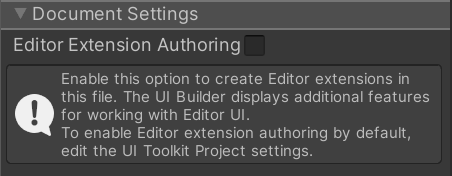

By default, UI(User Interface) Allows a user to interact with your application. Unity currently supports three UI systems. More info
See in Glossary Builder assumes UI is being created for use at runtime in a Player build. As such, all new UI Documents (UXML) created in the UI Builder have a setting saved within the UXML that marks them as runtime-only UI. The main effect this has in the UI Builder is that the Library pane’s Standard tab will be filtered to only contain elements that work best at runtime.
To create UI for the Unity Editor, like custom Editor Windows or custom InspectorsA Unity window that displays information about the currently selected GameObject, asset or project settings, allowing you to inspect and edit the values. More info
See in Glossary, you must enable Editor Extension Authoring on your UI Document (UXML). You can enable extension authoring in two ways:

Unlike the other Canvas settings, this setting will be saved as part of the UI Document (UXML) using a <UXML> root tag attribute called editor-extension-mode.
With Editor Extension Authoring enabled, you should have additional elements in the Library pane Standard tab. Editor-only elements are marked with an Editor Only pill.
To set the default setting for Editor Extension Authoring on new UI Documents (UXML):
Every UI Document (UXML) opened in UI Builder has an Editor Extension Authoring attribute. The UI Builder adds the attribute to the UI Document root tag, like the following example:
<ui:UXML xmlns:ui="UnityEngine.UIElements" xmlns:uie="UnityEditor.UIElements" editor-extension-mode="False">
| NOTE |
|---|
| Because the Editor extension authoring attribute is saved in the UI Document (UXML) file, it’s version controlled. When you create a new UI Document (UXML), the UI Builder sets its Editor Extension Authoring attribute according to the default specified in the UI Builder project settingsA broad collection of settings which allow you to configure how Physics, Audio, Networking, Graphics, Input and many other areas of your project behave. More info See in Glossary. |
UI Documents (UXML) that you create outside of the UI Builder (for example, in a text editor or IDE) don’t have an Editor Extension Authoring attribute until you open them in the UI Builder. When you open an externally created UI Document (UXML) in the UI Builder for the first time, the Editor Extension Authoring attribute is set according to the default specified in the UI Builder project settings.